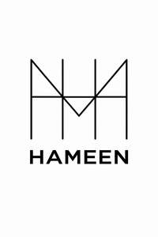

Trade Mark Journal No.2026/010 6 March 2026
UK00004341935 17 February 2026 (3,9,28)

- Class 3
- Beauty serums; Beauty creams; Beauty lotions; Beauty care cosmetics; Beauty masks; Masks (Beauty -); Beauty soap; Beauty milk; Beauty gels; Beauty milks; Beauty creams for body care; Beauty balm creams; Facial beauty masks; Beauty preparations for the hair; Beauty care preparations; Distilled oils for beauty care; Beauty tonics for application to the face; Beauty masks for hands; Beauty serums with anti-ageing properties; Beauty tonics for application to the body; Natural cosmetics; Body cleaning and beauty care preparations; Non-medicated beauty preparations; Natural makeup; Skincare cosmetics; Natural perfumery; Body care cosmetics; Hair cosmetics; Body and facial creams [cosmetics]; Cosmetics; Skin care cosmetics; Colour cosmetics; Facial creams [cosmetics]; Colour cosmetics for the skin; Hair care creams [for cosmetic use]; Anti-aging moisturizers used as cosmetics; Colour cosmetics for the eyes; Cosmetic products in the form of aerosols for skincare; Body creams [cosmetics]; Cosmetics for eye-lashes; Natural oils for cosmetic purposes; Hair care lotions [for cosmetic use]; Cosmetics for suntanning; Organic cosmetics; Facial makeup; Cosmetic products in the form of aerosols for skin care; Sun care lotions [for cosmetic use]; Hair shampoo; Hair shampoos; Hair dye; Hair relaxers; Hair pomades; Hair texturizers; Hair conditioner; Hair mousse; Hair lighteners; Dyes for the hair; Hair dyes; Hair mascara; Hair bleaches; Hair colourants; Hair bleach; Hair serums; Hair lotion; Hair lotions; Hair moisturizers; Hair gel; Hair rinses; Hair color; Hair conditioners; Hair mousses; Hair wax; Hair colouring; Hair sprays; Hair moisturisers; Hair styling lotions; Hair oils; Hair spray; Shampoos for human hair; Hair styling gel; Hair creams; Hair cream; Hair colorants; Hair gels; Hair nourishers; Hair emollients; Hair powder; Styling sprays for the hair; Baby hair conditioner; Tints for the hair; Hair tonics; Hair chalks; Hair oil; Hair masks; Hair styling waxes; Hair lacquer; Hair lacquers; Hair styling spray; Hair balsam; Hair styling gels; Styling gels for the hair; Hair balm; Hair balms; Hair tonic; Colouring lotions for the hair; Styling paste for hair; Hair liquid; Hair glaze; Non-medicated hair shampoos; Hair rinses [for cosmetic use]; Hair glazes; Hair and body wash; Cosmetic preparations for the hair and scalp; Hair liquids; Hand washes; Hand lotions; Hand creams; Hand cream; Hand soaps; Hand soap; Hand cleaner; Hand scrubs; Hand powders; Hand gels; Hand cleansers; Hand milks; Hand cleaners [hand cleaning preparations]; Hand and body butter; Face masks; Make-up for the face; Face wash; Face wipes; Face paint; Face blusher; Face scrub; Face and body masks; Face paints; Face powder; Face creams; Face glitter; Face powders; Make-up for the face and body; Face packs; Face and body glitter; Face gels; Face and body creams; Face oils; Face wash [cosmetic]; Pressed face powder; Cleaning masks for the face; Face and body lotions; Face powder [for cosmetic use]; Loose face powder; Exfoliating scrubs for the face; Make-up preparations for the face and body; Face packs [cosmetic]; Toning lotion, for the face, body and hands; Liquid soaps for hands and face; Face scrubs (Non-medicated -); Face cream (Non-medicated -); Cosmetic face powders; Face powders [for cosmetic use]; Face powder (Non-medicated -); Face dusting powders; Creamy face powder; Cosmetic paste for application to the face to counteract glare; Lotions for face and body care; Cosmetic white face powder; Face creams for cosmetic use; Face lifting stickers for cosmetic use; Face powder in the form of powder-coated paper; Eyes make-up; Non-medicated face care preparations; Disposable wipes impregnated with cleansing compounds for use on the face; Hand masks for skin care; Facial masks; Body mask cream; Body mask powder; Facial wash; Cosmetic creams for firming skin around eyes; Skin masks; Body mask lotion; Body masks; Clay skin masks; Skin moisturizer masks; Foot masks for skin care; Cosmetic facial masks; Facial masks [cosmetic]; Facial concealer; Facial washes; Gel eye masks; Eye make-up; Cosmetics in the form of eye shadow; Skin make-up; Artificial nails; False nails; Nails (False -); Glue for strengthening nails; Nail polish; Adhesives for false eyelashes, hair and nails; Nail glitter; Nail strengtheners; Adhesives for artificial nails; Lotions for strengthening the nails; Nail polish pens; Nail varnish; Varnish (Nail -); Nail enamel; Nail varnishes; Adhesives for fixing false nails; Nail paint [cosmetics]; Nail enamels; Nail polish removers; Nail makeup; Preparations for reinforcing the nails; Adhesives for affixing false nails; Nail polish remover pens; Nail cosmetics; Nail polish remover; Preparations for removing gel nails; Nail enamel removers; Nail polish removers [cosmetics]; Nail gel; Nail enamel remover; Nail tips; Nail hardeners; Nail varnish removers; Nail polish base coat; Nail tips [cosmetics]; Nail whiteners; Nail polish top coat; Nail hardeners [cosmetics]; Nail buffing preparations; Nail varnish remover [cosmetics]; Nail conditioners; Nail primer [cosmetics]; Gel nail removers; Nail polishing powder; Nail base coat [cosmetics]; Nail varnish removing preparations; Artificial fingernails; Abrasive boards for use on fingernails; Powder for forming sculpted finger nail tips; Tooth polishes; Decalcomanias for fingernails; Abrasive emery paper for use on fingernails; False fingernails; Nail varnish for cosmetic purposes; Nail cream; Artificial nails for cosmetic purposes; Tooth polish; False toenails; Abrasive paper for use on the fingernails; Adhesives for affixing artificial fingernails; Fingernail decals; Skin, eye and nail care preparations; Nail repair preparations; Cosmetic preparations for nail drying; Cosmetic nail preparations; Nail decolorants; Fingernail tips; Nail care preparations; Polish; Nail art stickers; Polishes; Metal polishes; Dressings for nail reconstruction; Artificial fingernails of precious metal; Metal polish; Cosmetic nail care preparations; Leather polishes; Shoe polishes; Body polish; Deodorants for the feet; Exfoliating scrubs for the feet; Foot scrubs; Soap for foot perspiration; Foot perspiration (Soap for -); Foot smoothing stones; Non-medicated foot soaks; Foot powder [non-medicated]; Non-medicated foot lotions; Liquid soap used in foot baths; Foot balms (Non-medicated -); Liquid soap used in foot bath; Foot deodorant spray; Non-medicated foot cream; Household detergents; Household cleansers; Household fragrances; Household bleach; Household cleaning substances; Cleansers for household purposes; Detergents for household use; Fragrance for household purposes; Soaps for household use; Cleaning substances for household use; Aromatics for household purposes; Laundry detergents for household cleaning use.
- Class 9
- Mobile phones; Mobile apps; Mobile telephones; Software for mobile phones; Mobile telecommunications handsets; Mobile software; Mobile computers; Mobile radios; Devices for hands-free use of mobile phones; Braille mobile phones; Mobile phone chargers; Chargers for mobile phones; Application software for mobile phones; Displays for mobile phones; Keyboards for mobile phones; Batteries for mobile phones; Downloadable ringtones for mobile phones; Mobile phone straps; Straps for mobile phones; Carriers adapted for mobile phones; Wireless headsets for mobile phones; Mobile phone cases; Downloadable emoticons for mobile phones; Downloadable graphics for mobile phones; Mobile phone speakers; Electronic game software for mobile phones; Chargers for mobile telephones; Mobile telephones for use in vehicles; Batteries for use with mobile telecommunication devices; Cases for mobile phones; Mobile phone covers; Earphones for use with mobile telecommunication devices; Computer software for mobile phones; Downloadable applications for use with mobile devices; Downloadable applications for mobile devices; Electric mobile digital communication devices; Downloadable mobile applications; Headsets for mobile telephones; Stands adapted for mobile phones; Fast chargers for mobile devices; Downloadable software applications for mobile phones; Mobile phone connectors for vehicles; Computer application software for mobile phones; Downloadable emoticons for mobile telephones; Downloadable graphics for mobile telephones; Straps for mobile telephones; Application software for mobile devices; Mobile telephone batteries; Mobile phone docking stations; Docking stations for mobile phones; Mobile telecommunications apparatus; Wireless headsets for use with mobile telephones; Mobile telecommunication apparatus; Holders adapted for mobile phones; Computer game software for use on mobile and cellular phones; Lanyards for mobile telephones; Mobile application software; Dashboard mounts for mobile phones; Holders adapted for mobile telephones and smartphones; Downloadable mobile applications for use with wearable computer devices; Auxiliary batteries for mobile phones; Software applications for use with mobile devices; Software applications for mobile devices; Software and applications for mobile devices; Battery chargers for mobile phones; Educational mobile applications; Mobile app's; Display modules for mobile phones; Mobile communication terminals; Cases adapted for mobile phones; Mobile phone battery chargers; Computer application software for mobile telephones; Downloadable ring tones for mobile phones; Mobile telephone cases; Downloadable mobile applications for booking taxis; Auxiliary speakers for mobile phones; Mobile phone ring holders; Software for mobile device management; Mobile device management software; Mobile telephone covers; Downloadable mobile coupons; Mobile applications for booking taxis; Mobile phone screen protectors; Wireless portable printers for use with laptops and mobile devices; Mobile phone ring stands; Mobile or portable fax machines; Local mobile telephone systems; Augmented reality software for use in mobile devices; Telecommunications apparatus for use with mobile networks; Mobile data apparatus; Dashboard mats adapted for holding mobile telephones and smartphones; Computer software for mobile applications that enable interaction and interface between vehicles and mobile devices; Screen protectors for mobile telephones; Computer game software for use on mobile devices; Protective cases for mobile phones; Carrying cases for mobile phones; Mobile data receivers; Games software for use with video game consoles; Computer games; Games software; Headsets for playing video games; Computer programs for playing games; Video games cartridges; Computer programmes for playing games; Games cartridges for use with electronic games apparatus; Game programs for arcade video game machines; Video games software; Audiovisual headsets for playing video games; Downloadable computer games; Joysticks for use with computers, other than for video games; Computer games programs; Interactive multimedia software for playing games; Software programs for video games; Computer game software for use with on-line interactive games; Downloadable interactive entertainment software for playing video games; Computer hardware for games and gaming; Computer games of chance; Video game programs; Programs for arcade video game machines; Downloadable interactive entertainment software for playing computer games; Educational software featuring instructions for playing games; Games software for use with computers; Software for online messaging; Software for operating an online shop; Software for designing online advertising on websites; Software for embedding online advertising on websites; Software for arranging online transactions; Computer software for accessing, browsing and searching online databases; Computer programs for accessing, browsing and searching online databases; Software for evaluating customer behaviour in online shops; Digital music downloadable provided from MP3 internet web sites; Downloadable digital music provided from MP3 Internet web sites; Digital music [downloadable] provided from mp3 web sites on the internet.
- Class 28
- Toys for pets; Toys for pet animals; Toys for domestic pets; Pet toys; Toys and playthings for pets; Toys and playthings for pet animals; Whack-a-mole toys for pets; Ball launchers for pets; Sports equipment for pets; Toys, games and playthings for pet animals; Toys for dogs; Toys for translating feelings of pets; Toys for cats; Toys for animals; Dog toys; Games; Games consoles; Arcade games; Pinball games; Sports games; Backgammon games; Chess games; Hockey games; Cards [games]; Checkers [games]; Checkers games; Mah-jongg games; Table-top games; Low-friction game tables for playing hockey games; Coin-operated games; Marbles for games; Games (Marbles for -); Miniatures for use in games; Balls for games; Games (Balls for -); Balls for playing games; Marbles for playing games; Dice games; Bowls [games]; Draughts [games]; Skittles [games]; Joysticks for video games; Parlor games; Tabletop basketball games; Boards games; Board games; Parlour games; Hand-held consoles for playing video games; Game consoles; Card games; Quiz games; Bats for games; Dart games; Party games; Memory games; Musical games; Game boards for trading card games; Go games; Interactive gaming chairs for video games; Electronic games; Apparatus for games; Tabletop games and gambling devices; Gloves for games; Boule games; Games (Apparatus for -); Video game consoles; Building games; Target games; Handheld computer games; Ring games; Hand held units for playing video games; Miniatures for use in war games; Computer game consoles; Bingo game playing equipment; Toys, games, and playthings; Chinese chess as games; Models for use with war games; Game cards; Playing cards and card games; Video game joysticks; Markers [counters] for playing games; Controllers for game consoles; Handheld game consoles; Trading card games; Nets for ball games; Bats for ball games; Skill and action games; Action skill games; Chinese checkers games.
PACKZEN LTD